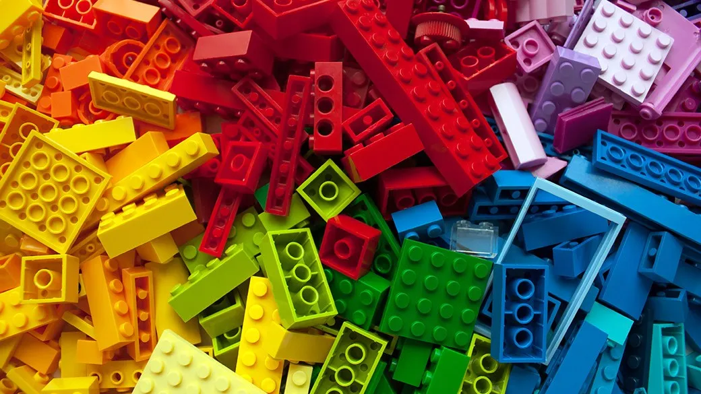

CSS itu apa sih??
Pikirin deh kalo HTML itu kerangka atau struktur LEGO yang kamu bangun. Sekarang, bayangin kamu mau kasih warna, bentuk, juga dekorasi setiap potongan LEGO. Nah, CSS ini nih alat yang bantu kamu melakukannya!
CSS
1. Warna (Color): Ini kaya kasih warna di setiap potongan-potongan LEGO. Kamu bisa kasih warna latar belakang halaman, teks, dan juga tombol. CSS pake color untuk mengatur warna teks dan background-color untuk latar belakang.
2. Ukuran dan Bentuk (Size and Shape): Kamu bisa buat potongan LEGO lebih besar atau lebih kecil. Di CSS, kamu bisa pake width untuk lebar dan height untuk tinggi. Juga, kamu bisa ubah bentuknya pake border-radius.
3. Posisi (Position): Ini cara kamu ngatur di mana potongan LEGO ditempatkan. CSS punya position yang akan bantu kamu ngatur posisi, kayak 'absolute' buat nempatin di lokasi yang tepat, juga 'relative' buat bergerak dari posisi awal.
CSS
4. Font dan Teks (Font and Text): Kamu bisa ubah jenis huruf (font) juga gimana teksnya diatur. CSS punya font-family buat jenis huruf, font-size buat ukuran huruf, juga text-align buat atur teks rata kanan, tengah, atau kiri.
5. Gaya Hover (Hover Effects): Ini itu waktu potongan LEGO berubah pas kamu ngarahin mouse ke atasnya. CSS punya :hover yang bisa kamu pake buat bikin efek menarik waktu ada mouse di atasnya.
6. Animasi (Animation): Ini itu bagian paling seru! Kamu bisa buat potongan LEGO yang gerak juga berubah pakai waktu. CSS punya animation yang memungkinkan kamu buat gerakan atau perubahan dalam halaman.
Lego
Jadi, CSS itu kayak temen yang ngebantu kamu buat hias potongan-potongan LEGO (elemen HTML) dalam halaman webmu. Pake CSS, kamu bisa buat halaman webmu lebih cantik dan menarik, kaya ngehias kamar mainanmu dengan LEGO yang warna-warni!